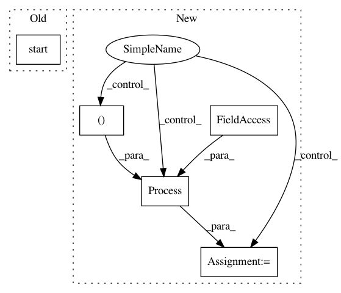

8442321b9b7a7cef7e3806b525965c36cea1549e,examples/60_search/example_parallel_manual_spawning.py,,,#,97
Before Change
target=spawn_classifier,
args=(i, "breast_cancer"),
)
p.start()
processes.append(p)
for p in processes:
p.join()
After Change
args=(cluster.scheduler_address,),
)
process_python_worker.start()
process_cli_worker = multiprocessing.Process(
target=start_cli_worker,
args=(cluster.scheduler_address,),
)
process_cli_worker.start()
// Wait a second for workers to become available
time.sleep(1)
In pattern: SUPERPATTERN
Frequency: 3
Non-data size: 5
Instances
Project Name: automl/auto-sklearn
Commit Name: 8442321b9b7a7cef7e3806b525965c36cea1549e
Time: 2020-09-25
Author: feurerm@informatik.uni-freiburg.de
File Name: examples/60_search/example_parallel_manual_spawning.py
Class Name:
Method Name:
Project Name: home-assistant/home-assistant
Commit Name: b596fa33d6b03bb858cf6599c1d37cb4a182af33
Time: 2016-01-26
Author: rmkraus@gmail.com
File Name: homeassistant/__main__.py
Class Name:
Method Name: main
Project Name: MaybeShewill-CV/CRNN_Tensorflow
Commit Name: ed66679b71989f55cc25d7adf69e386ad27c2063
Time: 2019-03-22
Author: luoyao@baidu.com
File Name: data_provider/tf_io_pipline_fast_tools.py
Class Name: CrnnFeatureWriter
Method Name: run